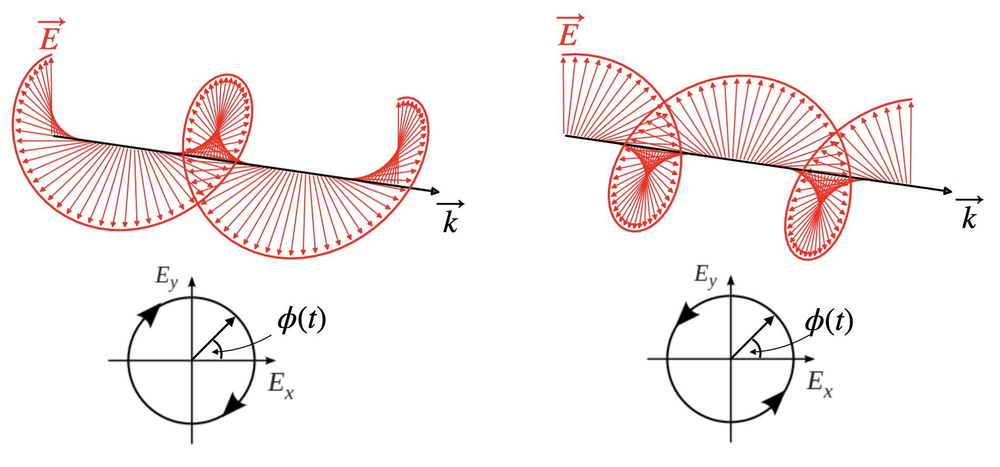
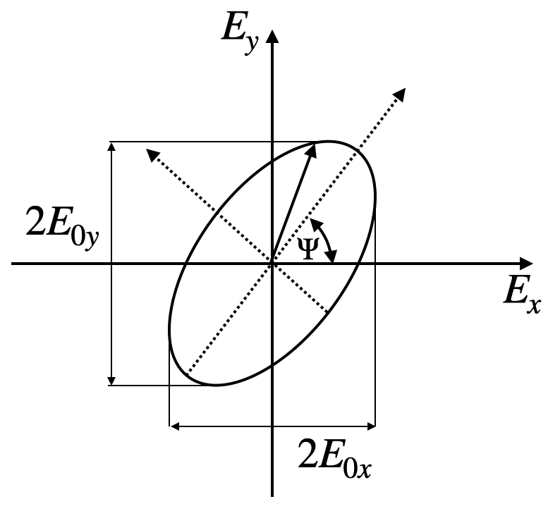
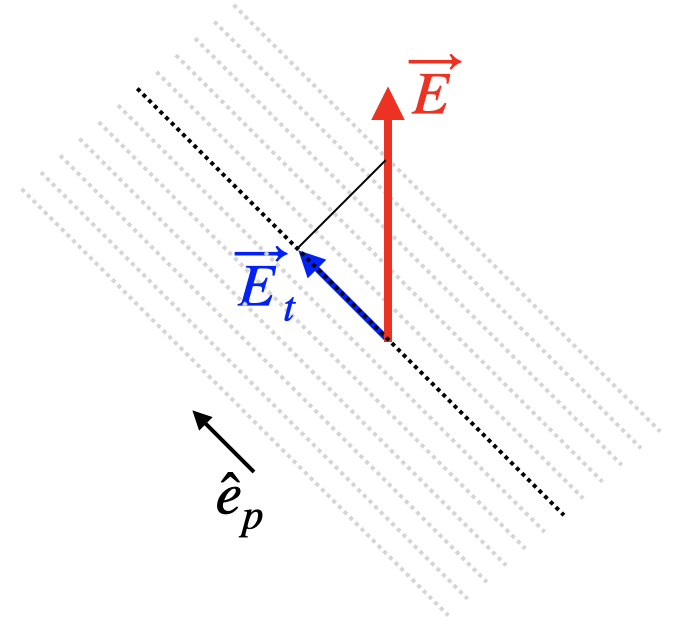
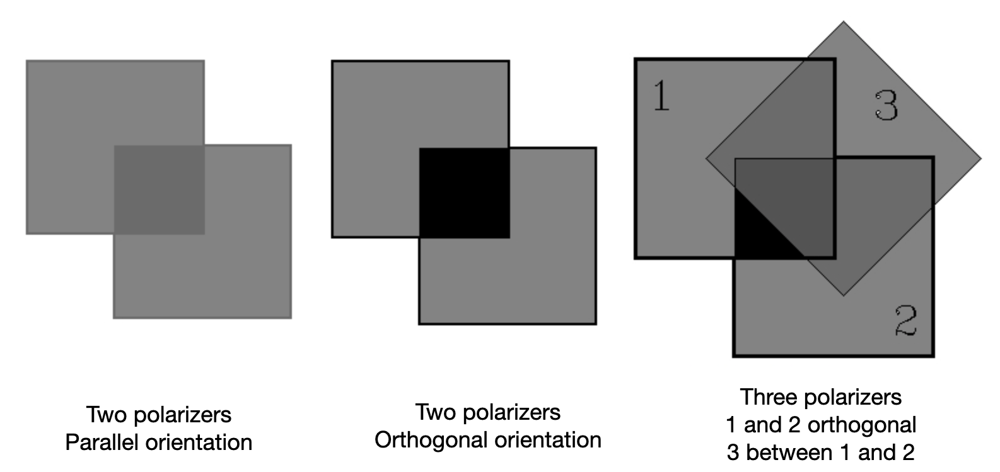

Polarization of EM Waves
The vectorial nature of electric and magnetic fields are the new property that we inserted into our description of wave propagation. Elecric and magnetic fields, while propagating along a certain direction, have a specific direction in the lab frame, which can change over time in specific ways. This stationary state of the direcion of the elecric field vector is termed polarization. You may also use teh magnetic field to define polarization, by commonly this is done using the electric field direction.
The polarization of an electromagnetic wave is defined by the direction of its elecric field vector in our laboratory frame.
We differentiate between different states of polarization, e.g. linear, circular, elliptical polarization. But we may, depending on the properties of the light source also have unpolarized light.
The polarization of light is important for many applications including for example 3D cinema or TV. The polarization state is commonly changed when light interacts with matter, therefore polarization is also a very important tool to characterize materials. For example, the technique of ellipsometry is studying the polarization state of light reflected from a material therby gaining important information about the electronic properties of the material. This is an important tool on solid-state physics. The polarization of light is also important for interence as two wave of orthogonal directions of the elecric field cannot interference (please check this idea yourself). It can be also used to encode information for quantum cryptography.
In the following sections we will shortly define these different polarization states.
Linearly Polarized Waves
Light is called linearly polarized if the electric field vector oscillates in a single plane during light propagation. The picture below, which we introduced earlier for a plane wave shows such a linearly polarized wave.

We can generalize this description a bit more. Our plane wave shall be given by
\[ \vec{E}=\vec{E}_0e^{i(\omega t-kz)} \]
The wave propagates along the z-direction. The polarization is given by the vector \(\vec{E}_0\). This vector can be split into its components along the x- and the y-direction
\[ \vec{E}_0=E_{0x}\hat{e}_x+E_{oy}\hat{e}_y \]
For a linearly polarized elecromagnetic wave, the magnitude of \(E_{0x}\) and \(E_{0y}\) are fixed over time, such that the angle of the electric field vector with the x-axis, for example, is fixed in time. This also requires that the phase of the total electric field components is the same, i.e.
\[\begin{eqnarray} E_{x}&=&E_{0x}e^{i(\omega t-kz)}\\ E_{y}&=&E_{0y}e^{i(\omega t-kz)}\\ \end{eqnarray}\]
The linear polarization state, independent of the polarization direction is also called \(\pi\)-polarization. We will use this term later in the description of light-atom interaction.
Circularly Polarized Waves
In circular polarized light, the end of the electric field vector describe a circle around the propagation direction. This means the elecric field vector is rotating around the propagation direction.

To obtain circularly polarized light we can consider our two polarization components again but with an additional phase shift of \(\pm\pi/2\) of one of the components (here the y-component) together with constraining the amplitude of the components to teh same value.
\[\begin{eqnarray} E_{x}&=&E_{0x}e^{i(\omega t-kz)}\\ E_{y}&=&E_{0y}e^{i(\omega t-kz\pm\frac{\pi}{2})}\\ E_{0y}&=&E_{0x} \end{eqnarray}\]
The consequence of that additional phase shift of one component is, that \(E_y\) reaches its maximum amplitude at a different position \(z\), when keeping the time fixed, i.e. making a snapshot. If \(z\) is fixed, the above formulas describe a rotation of the electric field around the direction of \(\vec{k}\) (here z-direction). The third equation ensures that during rotation the magnitude of the electric field vector is unchanged und thus the end of the electric field vectors describes a circle (bottom row of figure) around the direction of propagation.
Right circularly polarized light is also known as \(\sigma^{+}\) polarization, while left circularly polarized light is \(\sigma_{-}\) polarization.
Elliptically Polarized
If both components of the electric field carry an additional phase delay \(\delta_1\) and \(\delta_2\) and both component amplitudes are different \(E_0x\neq E_0y\), then we find elliptically polarized light
\[\begin{eqnarray} E_{x}&=&E_{0x}e^{i(\omega t-kz+\delta_1)}\\ E_{y}&=&E_{0y}e^{i(\omega t-kz+\delta_2)}\\ E_{0y}&\neq&E_{0x} \end{eqnarray}\]
which means that the end point of the electric field vector describes an ellipse around the propagation direction.

The ellipse is then described by
\[ \frac{E_x(z,t)^2}{E_{0x}^2}+\frac{E_y(z,t)^2}{E_{0y}^2}-\frac{2E_{x}(z,t)E_y(z,t)}{E_{0x}E_{0y}}\cos(\delta)=\sin^2(\delta) \]
where \(\delta=\delta_2-\delta_1\). The ellipse is in general not oriented along a specific axis but has an angle \(\Psi\) with the x-axis, which is fixed in time. This angle can be calculated by
\[ \tan(2\Psi)=\frac{2E_{0x}E_{0y}}{E^2_{0x}-E_{0y}^2}\cos(\delta) \]
The circular polarized state is a special case of the elliptically polarized state of light.
Unpolarized Light
Unpolarized light is obtained when the electric field vector fluctuates in polarization statistically.
Analyzing Polarization
The polarization state of light is analyzed with the help of polarizers. These can be thin polymeric films, where the order of the polymer chain in the film provides a preferential axis or polarizers can also be made of other birefringent materials like Mica, for example. Those materials are called anisotropic as they have a refractive index, which depends on the direction of the electric field in the material. Depending on the design of the polarizer, you may generate linearly polarized light, you may change the polarization direction or even create circularly polarized light. We will cover aisotropic materials in a later lecture.

In mathematical terms, a linear polarizer projects the electric field vector to a specific direction. If \(\vec{E}(z,t)\) is our electric field vector of the electromagnetic wave and \(\hat{e}_{p}\) is the unit vector in the polarization direction the resulting electric field after the light has trasmitted through the polarizer is given by
\[ \vec{E}_t(z,t)=(\vec{E}(z,t)\cdot \hat{e}_p)\hat{e}_p=E(z,t)\cos(\theta)\hat{e}_p \]
where \(\theta\) is the angle between the electric field vector and the polarizers orientation. This means the the intensity of a linearly polarized wave transmitted through a linear polarizer only disappears if polarizer and electric field are orthogonal (\(\theta=90{^\circ}\))
Law of Malus
The above description is also the essence of the Law of Malus, which concerns the transmission intensity. Taking the magnitude square of the left and the right side of the above equation yields
\[ I_t=I_0\cos^2(\theta) \]
If follows that the intensity drops to \(50\) %, when we adjust an angle of \(45^{\circ}\). As soon as we have a lecture in the lecture hall again, we will have a look at some nice demonstrations that illustrate Malu’s law similar to the picture below.
